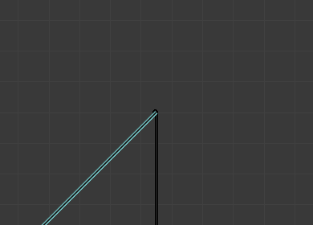
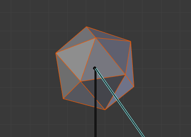

Модифікатор «Арматура» -- Armature Modifier¶
Модифікатор Armature використовується для вибудування скелетних систем для анімування поз персонажів та всього іншого, що має ставитися у пози.
Шляхом додання системи арматури до об'єкта такий об'єкт може деформуватися точно так, що геометрію не потрібно буде анімувати вручну.
Xem thêm
Детальніше про використання арматур дивіться тут -- armature section.
Опції¶
Модифікатор «Арматура» -- Armature.
- Об'єкт -- Object
- Ім'я об'єкта типу арматура, що використовується цим модифікатором.
- Зберігання Об'єму -- Preserve Volume
Використовує кватерніони для підтримання об'єму об'єкта у ході деформування. Це може бути кращим у багатьох ситуаціях.
При вимкненні Preserve Volume обертання у суглобах тяжіють до зменшення масштабу сусідньої геометрії, майже до нуля у 180 градусах від позиції спокою. При увімкненні Preserve Volume така геометрія більше не зменшується у масштабі, але тут є «проміжок», розрив, коли досягається 180 градусів від позиції спокою.

Початковий стан. |

100° обертання, Preserve Volume вимкнуто. |

180° обертання, Preserve Volume вимкнуто. |

100° обертання, Preserve Volume увімкнено. |

179.9° обертання, Preserve Volume увімкнено. |

180.1° обертання, Preserve Volume увімкнено. |
{kind=link}
{kind=link}
- Група Вершин -- Vertex Group
Ім'я групи вершин об'єкта, вагомості якої будуть використовуватися для визначення впливу результату цього модифікатора Armature при змішуванні його з результатами інших Арматур.
Має значення тільки тоді, коли наявні принаймні два цього типу модифікатори на одному і тому ж об'єкті з увімкненою опцією Multi Modifier.
- Інвертування -- Invert
- Інвертує вплив, заданий групою вершин, визначеною в попередній уставі (тобто, розвертає значення вагомостей цієї групи).
Прив'язка До -- Bind To¶
Методи прив'язання арматури до сіті.
- Групи Вершин -- Vertex Groups
Meshes and lattices only -- When enabled, bones of a given name will deform vertices which belong to vertex groups of the same name. e.g. a bone named "forearm", will only affect the vertices in the "forearm" vertex group.
Вплив однієї кістки на задану вершину скеровується вагомістю цієї вершини у відповідній групі. Набагато більш точний метод, ніж «оболонки кісток» -- Bone Envelopes, але також, як правило, вимагає більше часу для укладання.
- Оболонки Кісток -- Bone Envelopes
- При увімкненні кістки будуть деформувати біля них вершини або керувальні точки, визначені радіусом та відстанню кожної оболонки кістки. Вмикає/Вимикає оболонки -- envelopes кісток, що визначають цю деформацію (тобто, кістки деформують вершини по сусідству).

Вагомості групи вершин руки. |

Вагомості групи вершин передпліччя. |

Результат при позуванні арматури. |

Ця ж поза, але з використанням методу оболонок, а не груп вершин. |
Багато Модифікатор -- Multi Modifier¶
Використовує ті ж дані, що й попередній модифікатор (зазвичай також модифікатор Armature), в якості уводу. Це дозволяє вам використовувати кілька арматур для деформування одного і того ж об'єкта, і всі вони базуються на «не-деформованих» даних (тобто, це запобігає деформуванню другим модифікатором «Арматура» результату першого...).
Результати цих модифікаторів Armature далі змішуються разом, використовуючи вагомості Групи Вершин як «основу змішання».
Mẹo
Модифікатори типу Armature можна швидко додати до об'єктів, використовуючи скорочення приріднення Ctrl-P, коли у виділ активним об'єктом є арматура.